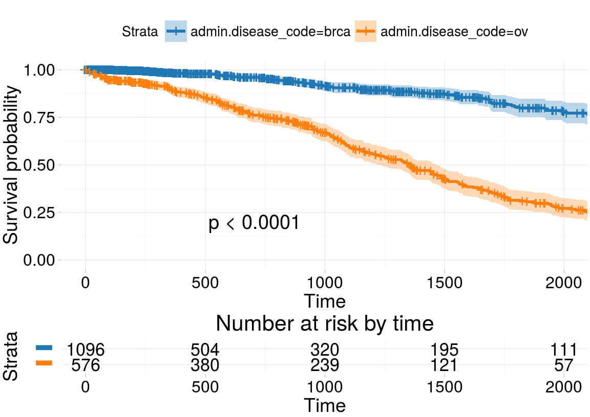
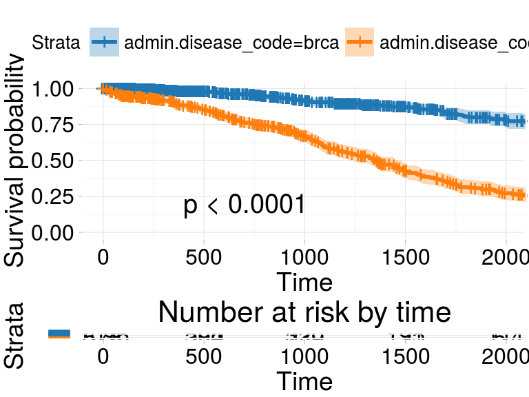

archivist 2.0: (News from)
Managing Data Analysis Results Toolkit
Marcin Kosiński
October 13, 2016
Results
Results
Should be
- easy to access (for further processing)
- verifiable
- reproducible
Desired format
library(archivist.github)
archive(survplot, alink = TRUE) # results='asis' archivist::aread('archivistR/eRum2016/817107d0e62a9500c4ddb1770bd03378')
Desired format
ahistory(BRCA.rnaseq.TP53, format = "kable", alink = TRUE )| call | md5hash | |
|---|---|---|
| 4 | BRCA.rnaseq | 63678e012c5b7f40966c32eec91f828b |
| 3 | select(TP53|7157, bcr_patient_barcode) |
4a85ce61229dd743b911d7edab0310b3 |
| 2 | rename(TP53 = TP53|7157) |
103f2b82c41956e9f6437b3a0cd68679 |
| 1 | filter(substr(bcr_patient_barcode, 14, 15) == “01”) | 1da5a026aae19e0d0467ba3773679e28 |
head(getTagsRemote("63678e012c5b7f40966c32eec91f828b", tag=""))[1] "format:rda" "name:BRCA.rnaseq"
[3] "class:data.frame" "varname:bcr_patient_barcode"
[5] "varname:?|100130426" "varname:?|100133144" asession("63678e012c5b7f40966c32eec91f828b")
package * version date source
archivist * 2.1 2016-07-27 CRAN (R 3.3.1)
archivist.github * 0.2.2 2016-08-30 CRAN (R 3.3.1)
assertthat 0.1 2013-12-06 CRAN (R 3.3.1)
bitops 1.0-6 2013-08-17 CRAN (R 3.3.1) Problems with reproducibility
Problems with reproducibility
The reproducibility is sometimes impossible due to different
- base version of R
- versions of R packages
- versions of dependent software
- global variables
or due to the
- limitation of the original data
- insufficient computational machinery
Can’t install git2r nor devtools R packages on centOS 7.0 64 bit
pandoc version 1.12.3 or higher is required and was not found (R shiny)
rmarkdown::render freezes because pandoc freezes when LC_ALL and LANG are unset
improve accessibility
improve accessibility
Provide results with unique hooks, so that one can
verify, use and modify them.
install.packages('archivist') Store results in the repository with their metadata
- searching for objects with specific attributes is possible.
library(archivist)
prod_model <- lm(Sepal.Length ~ ., data = iris)
asave(prod_model, repoDir="eRum2016")[1] "43c5d536cfb4d46c2862e6f4cb385c27"
attr(,"data")
[1] "f6ba0d40e585d1f9c294069d68f8e01e"archivist worklfow
archivist worklfow

Core Usecases
add hooks to print
library(survminer) # results='asis'
addHooksToPrint(class="ggsurvplot")
survplotLoad: archivist::aread('archivistR/eRum2016/817107d0e62a9500c4ddb1770bd03378')  Greater example by pbiecek
Objects’ Exploration
lapply(asearch("pbiecek/graphGallery",
patterns = c("class:lm", "coefname:Sepal.Length")),
coef)$`18a98048f0584469483afb65294ce3ed`
(Intercept) Sepal.Length
-7.101443 1.858433
$`2a6e492cb6982f230e48cf46023e2e4f`
(Intercept) Sepal.Length Speciesversicolor Speciesvirginica
-1.7023422 0.6321099 2.2101378 3.0900021 archivist + shiny

Source: Shiny + archivist = reproducible interactive exploration by pbiecek
cache engine
aread("MarcinKosinski/Museum/c647") -> manyComputations
system.time(cache(FUN = manyComputations, rnorm, 1000,
cacheRepo = "eRum2016")) user system elapsed
89.753 0.163 89.874 system.time(cache(FUN = manyComputations, rnorm, 1000,
cacheRepo = "eRum2016")) user system elapsed
0.019 0.000 0.018 restoring pedigree
library(RTCGA.rnaseq); data(BRCA.rnaseq)
library(dplyr); library(archivist) #for %a%
BRCA.rnaseq %a%
select(`TP53|7157`,
bcr_patient_barcode) %a%
rename(TP53 = `TP53|7157`) %a%
filter(substr(bcr_patient_barcode,
14, 15) == "01" ) ->
BRCA.rnaseq.TP53ahistory(BRCA.rnaseq.TP53)| call | md5hash | |
|---|---|---|
| 4 | BRCA.rnaseq | 63678e012c5b7f40966c32eec91f828b |
| 3 | select(TP53|7157, bcr_patient_barcode) |
4a85ce61229dd743b911d7edab0310b3 |
| 2 | rename(TP53 = TP53|7157) |
103f2b82c41956e9f6437b3a0cd68679 |
| 1 | filter(substr(bcr_patient_barcode, 14, 15) == “01”) | 1da5a026aae19e0d0467ba3773679e28 |
More Usecases
The list of blog-posts and conference talks about archivist
- 2016-08 Ver 2.1.0 A link that can tell more than dozens of lines of R code – what’s new in archivist? (Przemysław Biecek)
- 2016-06 Ver 2.0.4 useR! 2016 Conference, Stanford How to use archivist to boost reproducibility (Przemyslaw Biecek)
- 2016-06 Ver 0.2.1
archivist.github: R Hero saves Backup City with archivist and GitHub (Marcin Kosiński) - 2016-05 Ver 2.0.3 All your models belong to us: how to combine package archivist and function trace() (Przemysław Biecek)
- 2016-02 Ver 2.0 Why should you backup your objects? (Przemysław Biecek)
- 2016-02 Ver 0.1 First extenstion:
archivist.githubCRAN Publication, Tools for Archiving, Managing and Sharing R Objects via GitHub - 2016-02 Ver 2.0 CRAN Publication
- 2015-11 Ver 1.7 BI Forum Conference, Hungary, archivist: Managing Data Analysis Results (Marcin Kosiński)
- 2015-06 Ver 1.5 useR! 2015 Conference, Denmark, archivist: Tools for Storing, Restoring and Searching for R Objects (Przemyslaw Biecek)
- 2014-10 Ver 1.1 Polish R Users Conference 2014, Poland, Archiving artifacts with archivist (Marcin Kosiński)
- 2014-09 Ver 1.1 Lazy Load With archivist (Marcin Kosiński)
- 2014-08 Ver 1.0 CRAN Publication
Extensions
archivist.github

Thanks for your attention

Remark
Remark
Examples would not work without few settings
aoptions("user", "archivistR")
aoptions("repo", "eRum2016")
aoptions("repoDir", "eRum2016")Source code of a presentation is on this repository.